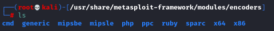

Modules
Metasploit modules/usr/share/metasploit-framework/modules
•
auxiliary: directory that contains modules associated with:
◇ port scanning
◇ scanning for vulnerable systems
◇ launching denial-of-service attacks
◇ ...
three types of payloads:
◇ single: payload that has all of the necessary raw code to perform a particular task.
◇ stager: payload that is used to setup the connection between the target and the attacker machine
◇ staged: once established the connection with a stager, a staged payload is sent to the target
•
encoders: directory of modules that convert an exploit-and-payload combination to a different form, encoding it:
◇ to avoids certain characters that might be filtered out by the target system.
◇ to not match the signatures of an IPS or IDS tool
•
exploits: directory of Metasploit exploits
•
nops: directory that contains scripts that generate NOP sleds for different architectures.
A NOP(pronounced either "nop" or "no-op") mean No-Operation. A series of NOPs is called a NOP-sled.
Usually used the NOP-sled are used in buffer exploit attack to make a program jump to an area of memory in which the attacker has inserted the payload code.
for more go to the
Buffer Overflow chapter •
payloads: directory of Metasploit payloads
•
post: directory with modules run after successful exploitation occurs